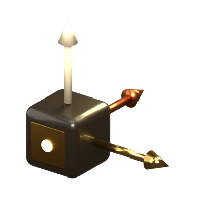
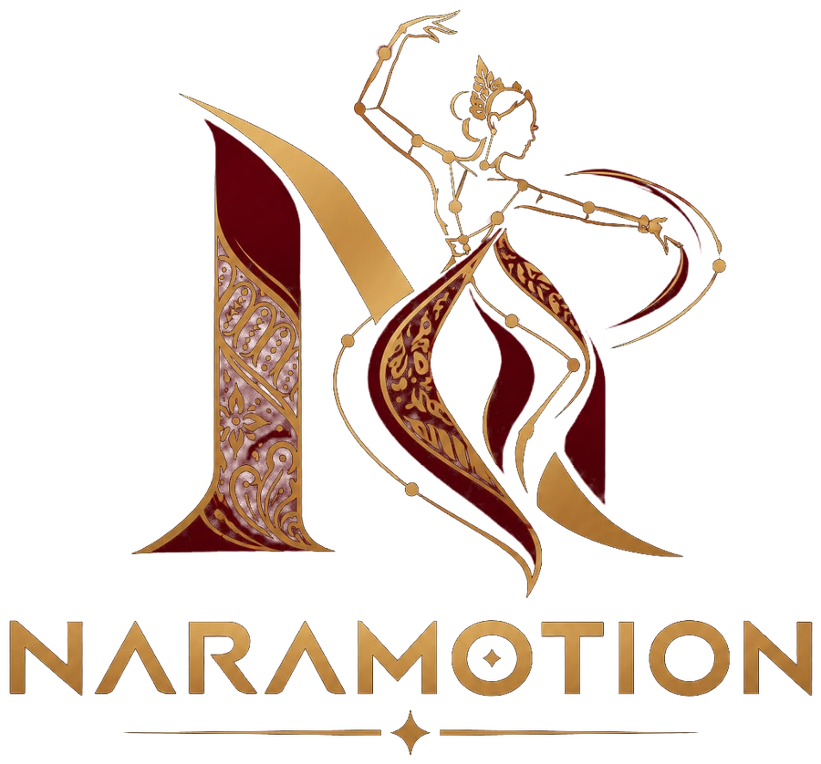
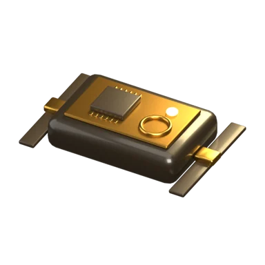
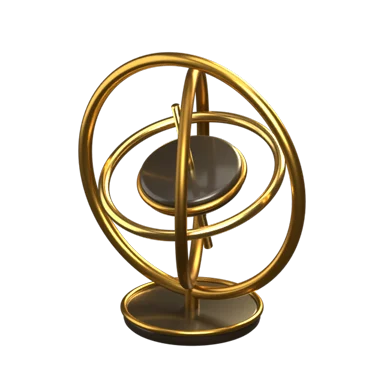
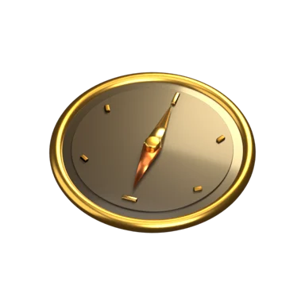
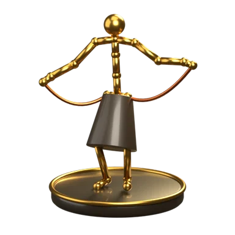
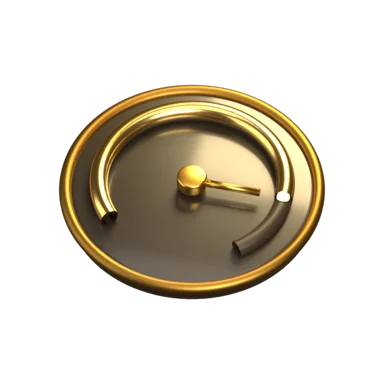
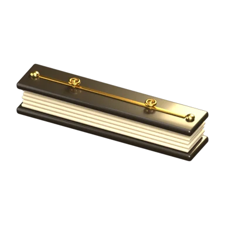
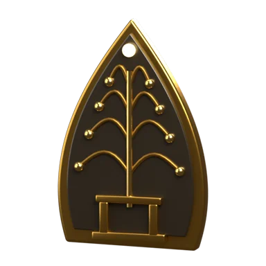

Akselerometer
Membaca gravitasi dan percepatan gerak. Menentukan kemiringan segmen dan mendeteksi hentakan kaki.
Chip ADXL345 · Rentang ±16 g

Merekam, melestarikan, dan mengajarkan tari Nusantara dengan sensor gerak dan kecerdasan buatan.
Gulir untuk mulaiꦤꦫnara (bahasa Kawi): manusia
Motion Capture · 9-DoF MARG · Kecerdasan Buatan
An AI-Driven 9-DoF MARG Motion Capture Platform for Nusantara Cultural Dance Digitization and Student Education
Merekam gerak tari Nusantara dalam tiga dimensi, menyimpannya sebagai arsip digital, dan mengajarkannya kembali kepada siswa dengan umpan balik per sendi.
Video contoh
Seperti Reels atau TikTok: satu video, satu gerak. Gambyong tampil pertama sebagai tari khas Solo, disusul 24 gerak dasar tari Bali yang direkam penari asli. Tekan Latih gerak ini untuk langsung berlatih dengan Kamera AI.
Video gerak Bali: Hendrawan dkk., Mendeley Data, CC BY 4.0. Gambyong ditampilkan sebagai animasi NaraMotion sampai rekaman penari tersedia.
Galeri sejarah tari
Setiap tari punya cerita: dari mana asalnya, untuk apa ditarikan, dan apa ciri geraknya. Di NaraMotion VR, galeri ini menjadi ruang pamer virtual yang dikunjungi sebelum kelas dimulai.
Tentang
Selama ini tari tradisional diajarkan dari guru ke murid secara tatap muka. Rekaman video membantu, tetapi video hanya menangkap gambar dua dimensi: sudut siku, kedalaman mendhak, dan putaran ukel pergelangan tangan sering tidak terbaca.
NaraMotion membaca gerak di sepuluh titik tubuh penari: kepala dari headset VR, sisanya dari sembilan sensor kecil yang dipakai seperti jam tangan. Setiap sensor membaca percepatan, kecepatan sudut, dan medan magnet bumi sehingga orientasi setiap segmen tubuh bisa dihitung dalam 3D. Hasilnya menjadi arsip gerak maestro yang presisi dan bahan belajar yang terukur bagi siswa.
| Aspek | Video 2D | NaraMotion |
|---|---|---|
| Kedalaman gerak | Hilang | Terekam (3D) |
| Sudut sendi | Diperkirakan | Dihitung tiap 10 ms |
| Pengaruh cahaya & kostum | Besar | Hampir tidak berpengaruh |
| Perbandingan guru–siswa | Manual | Otomatis per sendi |
| Ukuran data per menit | ±100 MB | ±1,5 MB |
Cara kerja
Kenakan headset VR untuk kepala, lalu sembilan sensor: satu di badan (tempel magnet), empat di lengan, dan empat di paha serta betis (tali model jam tangan).
Filter Madgwick menggabungkan sembilan sumbu data menjadi kuaternion orientasi setiap segmen tubuh, 100 kali per detik.
Model AI mengenali gerak yang diperagakan (saat ini 24 gerak dasar tari Bali), lalu membandingkan gerak siswa dengan gerak acuan per sendi.
Gerak disimpan sebagai arsip tari Nusantara. Siswa berlatih di kelas digital dan menerima skor serta saran per sendi.
Sensor 9-DoF MARG

MARG adalah singkatan dari Magnetic, Angular Rate, and Gravity. Gabungan ketiganya memberi sembilan derajat kebebasan pengukuran pada setiap node.

Membaca gravitasi dan percepatan gerak. Menentukan kemiringan segmen dan mendeteksi hentakan kaki.
Chip ADXL345 · Rentang ±16 g

Membaca kecepatan putar. Menangkap gerak cepat dan halus seperti ukel pergelangan tangan.
Chip ITG-3205 · Rentang ±2000 °/s

Membaca medan magnet bumi sebagai kompas. Menjaga arah hadap penari agar tidak bergeser seiring waktu.
Chip HMC5883L · Medan magnet bumi di Jawa ±44 µT
Perangkat keras
Setiap node berdiri sendiri: punya baterai, prosesor, layar status, dan sensor gerak. Sembilan node identik dipakai di badan, lengan, dan kaki; gerak kepala dibaca headset VR.
Penempatan: badan, lengan atas dan lengan bawah kiri-kanan, paha dan betis kiri-kanan. Kepala: headset VR.
Node di lengan atas dan lengan bawah memakai tali seperti jam tangan atau gelang. Rekatkan untuk mengencangkan, tekan tombol pelepas untuk melonggarkan.
Desain yang sama untuk paha dan betis, dengan tali lebih panjang dan lebar agar pas di kaki dan tidak bergeser saat mendhak.
Pelat magnet dipasang di bagian dalam kostum, lalu node ditempelkan dari luar. Mudah dilepas-pasang tanpa menjahit atau melubangi kostum.
Gerak kepala dibaca headset VR standalone yang menyala sendiri tanpa ponsel, misalnya kelas Meta Quest 3/3S atau Pico 4 Ultra. Bukan VR yang memakai HP sebagai layar.
NaraMotion VR · konsep pengembangan
Di dalam headset VR, siswa tidak langsung disodori latihan. Mereka masuk ke pendapa virtual, berkeliling galeri sejarah tari, baru kemudian berlatih atau bermain bersama penari virtual.
Ruang pamer virtual berisi asal-usul, busana, gamelan, dan makna tiap tari. Gambyong menjadi ruang pertama.
Ikuti penari virtual dari depan, samping, atau cermin. Sensor memberi tahu sendi mana yang belum tepat.
Mode game: tirukan pose sesuai ketukan kendang, kumpulkan poin, buka level dan tari berikutnya, atau tantang teman.
Status: konsep. Aplikasi VR belum dibuat; web, Kamera AI, dan simulasi sensor sudah bisa dicoba.
Fitur aplikasi

Lihat avatar penari bergerak dari data sensor, pantau grafik 9 sumbu per node, baca kuaternion, dan rekam sesi.
Buka Studio →
Bandingkan gerak siswa dengan maestro. AI memberi skor kemiripan, galat sudut per sendi, dan saran perbaikan.
Buka Kelas →
Jelajahi data tari dari Jawa, Bali, dan daerah lain, beserta ragam geraknya dan sesi rekaman yang sudah disimpan.
Buka Arsip →Arsip tari
Sumber data & kredit
Tim pengembang

Daftar dengan email atau akun Google, lalu coba Studio sekarang. Studio memakai data sensor simulasi, jadi tidak perlu perangkat tambahan.
Masuk untuk membuka Studio, Kelas, dan Arsip.
Seret avatar untuk memutar sudut pandang
Kalibrasi kamera
| Node | Galat | Sebaran | Status |
|---|
Ke-24 gerak dasar Bali dari video penari dipasang ke rig karakter 3D (Mixamo Y Bot). Sumber utama: hasil digitalisasi SAM 3D Body, lengkap dengan ruas jari. Pilih gerak, lalu seret untuk memutar, cubit atau gulir untuk memperbesar.
Belum ada sesi rekaman. Buka Studio, pilih tari, lalu tekan Rekam.
Memeriksa koneksi Firebase…
| Waktu | Tari | Oleh | Durasi | Frame | Aksi |
|---|